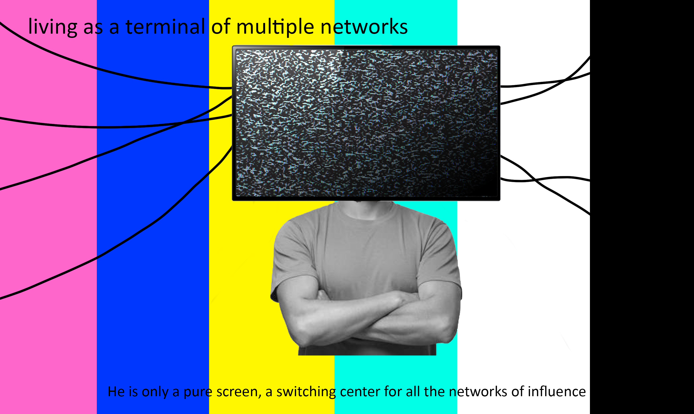

Text and images
Images based on the reading,'The Ecstasy of Communication'. My process was to underline the most vivid(to me) passages and writing ideas based on my interpretations. I then chose images and drew as needed to get the image I wanted.


